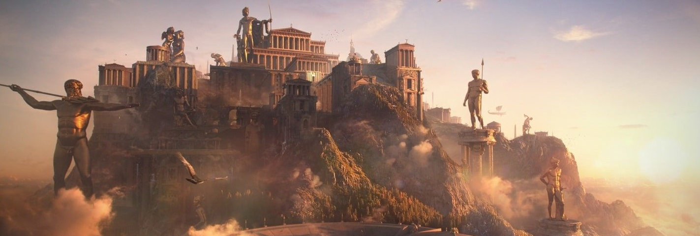
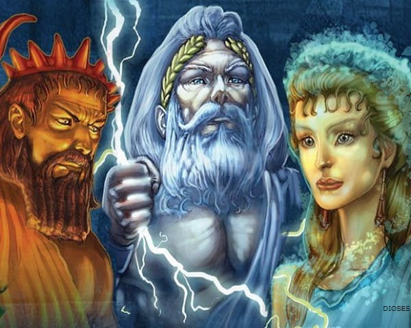

Mitología Griega

La mitología griega es el conjunto de mitos y leyendas pertenecientes a la cultura de la Antigua Grecia, que tratan de sus dioses y héroes, la naturaleza del mundo, los orígenes y el significado de sus propios cultos y prácticas rituales. Formaban parte de la religión de la Antigua Grecia, que tenía como objeto de culto básicamente a los dioses olímpicos. Los investigadores modernos recurren a los mitos y los estudian en un intento por arrojar luz sobre las instituciones religiosas y políticas de la antigua Grecia y su civilización, así como para entender mejor la naturaleza de la propia creación de los mitos
Estos mitos griegos intentan explicar los orígenes del mundo y detallan las vidas y aventuras de una amplia variedad de dioses, héroes y otras criaturas mitológicas.
Dioses
En la religión de la antigua Grecia, los dioses olímpicos eran los principales dioses del panteón griego, que moraban en el monte Olimpo (el más alto de Grecia). A ellos les fueron consagrados tanto templos, como festividades cívicas, actividades artísticas y deportivas, siendo considerados los más importantes dentro del amplio conjunto de las deidades de la mitología griega.
Heroes
Los héroes griegos eran personajes mitológicos, fundadores epónimos de ciudades y territorios griegos. Estos héroes no siempre eran modelos de conducta o poseían virtudes heroicas; muchos eran semidioses, hijos de mortales y dioses.

Criaturas Mitologicas
Las criaturas mitológicas griegas son muy conocidas gracias a las diferentes historias que se han popularizado a través de los años, estos personajes pueden ser malignos o benevolentes, así como también cuentan con grandes poderes.